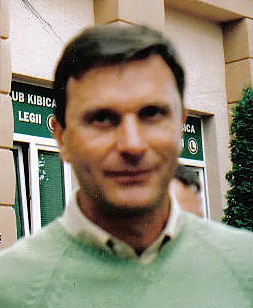

Photo source ↗Sławek · CC BY-SA 2.0
The profile
Władysław Żmuda
Władysław Żmuda was a Polish central defender known for his consistency across four World Cups. He played much of his club football in Poland.
Żmuda played in Poland and later in Italy. His positioning and consistency at centre-back helped Poland maintain a strong defensive core across multiple tournament squads.
Żmuda made 21 World Cup appearances from 1974 to 1986. Poland finished third in 1974 and 1982, and he appears in retrospective young-player selections for the 1974 edition.
1974West Germany
Third place
Group D Poland3 : 2Argentina
- Grzegorz LATO7′
- Andrzej SZARMACH8′
- Grzegorz LATO62′
- Ramon HEREDIA60′
- Carlos BABINGTON66′
Polandhome
Starting lineup
- Jan TOMASZEWSKI
- Antoni SZYMANOWSKI
- Jerzy GORGON
- Wladyslaw ZMUDA
- Adam MUSIAL
- Kazimierz DEYNA
- Henryk KASPERCZAK
- Zygmunt MASZCZYK
- Grzegorz LATO
- Andrzej SZARMACH
- Robert GADOCHA
Substitutions
- 70′Jan DOMARSKI on · Andrzej SZARMACH off
- 85′Leslaw CMIKIEWICZ on · Robert GADOCHA off
Argentinaaway
Starting lineup
- Daniel CARNEVALI
- Angel BARGAS
- Ramon HEREDIA
- Roberto PERFUMO
- Francisco SA
- Enrique WOLFF
- Miguel BRINDISI
- Ruben AYALA
- Carlos BABINGTON
- Agustin BALBUENA
- Mario KEMPES
Substitutions
- 45′Rene HOUSEMAN on · Miguel BRINDISI off
- 67′Roberto TELCH on · Angel BARGAS off
Group D Poland7 : 0Haiti
- Grzegorz LATO17′
- Kazimierz DEYNA18′
- Andrzej SZARMACH30′
- Jerzy GORGON31′
- Andrzej SZARMACH34′
- Andrzej SZARMACH50′
- Grzegorz LATO87′
Polandhome
Starting lineup
- Jan TOMASZEWSKI
- Antoni SZYMANOWSKI
- Jerzy GORGON
- Wladyslaw ZMUDA
- Adam MUSIAL
- Kazimierz DEYNA
- Henryk KASPERCZAK
- Zygmunt MASZCZYK
- Grzegorz LATO
- Andrzej SZARMACH
- Robert GADOCHA
Substitutions
- 65′Leslaw CMIKIEWICZ on · Zygmunt MASZCZYK off
- 71′Zbigniew GUT on · Adam MUSIAL off
Haitiaway
Starting lineup
- Henry FRANCILLON
- Arsene AUGUSTE
- Fritz ANDRE
- Pierre BAYONNE
- Wilner NAZAIRE
- Philippe VORBE
- Jean Claude DESIR
- Eddy ANTOINE
- Guy FRANCOIS
- Roger SAINT-VIL
- Emmanuel SANON
Substitutions
- 37′Claude BARTHELEMY on · Fritz ANDRE off
- 45+1′Serge RACINE on · Roger SAINT-VIL off
Group D Poland2 : 1Italy
- Andrzej SZARMACH38′
- Kazimierz DEYNA44′
- Fabio CAPELLO85′
Polandhome
Starting lineup
- Jan TOMASZEWSKI
- Antoni SZYMANOWSKI
- Jerzy GORGON
- Wladyslaw ZMUDA
- Adam MUSIAL
- Kazimierz DEYNA
- Henryk KASPERCZAK
- Zygmunt MASZCZYK
- Grzegorz LATO
- Andrzej SZARMACH
- Robert GADOCHA
Substitutions
- 78′Leslaw CMIKIEWICZ on · Andrzej SZARMACH off
Italyaway
Starting lineup
- Dino ZOFF
- Luciano SPINOSI
- Giacinto FACCHETTI
- Francesco MORINI
- Tarcisio BURGNICH
- Romeo BENETTI
- Sandro MAZZOLA
- Fabio CAPELLO
- Franco CAUSIO
- Giorgio CHINAGLIA
- Pietro ANASTASI
Substitutions
- 33′Giuseppe WILSON on · Tarcisio BURGNICH off
- 45+1′Roberto BONINSEGNA on · Giorgio CHINAGLIA off
Second-phase Group 2 Poland1 : 0Sweden
- Grzegorz LATO43′
Polandhome
Starting lineup
- Jan TOMASZEWSKI
- Antoni SZYMANOWSKI
- Zbigniew GUT
- Jerzy GORGON
- Wladyslaw ZMUDA
- Kazimierz DEYNA
- Henryk KASPERCZAK
- Zygmunt MASZCZYK
- Grzegorz LATO
- Andrzej SZARMACH
- Robert GADOCHA
Substitutions
- 60′Kazimierz KMIECIK on · Andrzej SZARMACH off
Swedenaway
Starting lineup
- Ronnie HELLSTROM
- Kent KARLSSON
- Bjorn NORDQVIST
- Bjorn ANDERSSON
- Roland GRIP
- Ove GRAHN
- Bo LARSSON
- Staffan TAPPER
- Conny TORSTENSSON
- Ralf EDSTROM
- Roland SANDBERG
Substitutions
- 60′Jorgen AUGUSTSSON on · Bjorn ANDERSSON off
- 80′Thomas AHLSTROM on · Staffan TAPPER off
Second-phase Group 2 Poland2 : 1Yugoslavia
- Kazimierz DEYNA24′ · pen.
- Grzegorz LATO62′
- Stanislav KARASI43′
Polandhome
Starting lineup
- Jan TOMASZEWSKI
- Antoni SZYMANOWSKI
- Jerzy GORGON
- Wladyslaw ZMUDA
- Adam MUSIAL
- Kazimierz DEYNA
- Henryk KASPERCZAK
- Zygmunt MASZCZYK
- Grzegorz LATO
- Andrzej SZARMACH
- Robert GADOCHA
Substitutions
- 57′Leslaw CMIKIEWICZ on · Andrzej SZARMACH off
- 80′Jan DOMARSKI on · Kazimierz DEYNA off
Yugoslaviaaway
Starting lineup
- Enver MARIC
- Ivan BULJAN
- Enver HADZIABDIC
- Josip KATALINSKI
- Vladislav BOGICEVIC
- Ilija PETKOVIC
- Branko OBLAK
- Jovan ACIMOVIC
- Ivica SURJAK
- Stanislav KARASI
- Dusan BAJEVIC
Substitutions
- 16′Jurica JERKOVIC on · Branko OBLAK off
- 81′Vladimir PETROVIC on · Ilija PETKOVIC off
Second-phase Group 2 West Germany1 : 0Poland
- Gerd MUELLER76′
West Germanyhome
Starting lineup
- Sepp MAIER
- Berti VOGTS
- Paul BREITNER
- Hans Georg SCHWARZENBECK
- Franz BECKENBAUER
- Wolfgang OVERATH
- Uli HOENESS
- Rainer BONHOF
- Juergen GRABOWSKI
- Gerd MUELLER
- Bernd HOELZENBEIN
Substitutions
- No substitutions
Polandaway
Starting lineup
- Jan TOMASZEWSKI
- Antoni SZYMANOWSKI
- Jerzy GORGON
- Wladyslaw ZMUDA
- Adam MUSIAL
- Kazimierz DEYNA
- Henryk KASPERCZAK
- Zygmunt MASZCZYK
- Grzegorz LATO
- Robert GADOCHA
- Jan DOMARSKI
Substitutions
- 80′Leslaw CMIKIEWICZ on · Zygmunt MASZCZYK off
- 80′Kazimierz KMIECIK on · Henryk KASPERCZAK off
Third-place match Poland1 : 0Brazil
- Grzegorz LATO76′
Polandhome
Starting lineup
- Jan TOMASZEWSKI
- Antoni SZYMANOWSKI
- Jerzy GORGON
- Wladyslaw ZMUDA
- Adam MUSIAL
- Kazimierz DEYNA
- Henryk KASPERCZAK
- Zygmunt MASZCZYK
- Grzegorz LATO
- Andrzej SZARMACH
- Robert GADOCHA
Substitutions
- 73′Leslaw CMIKIEWICZ on · Henryk KASPERCZAK off
- 75′Zdzislaw KAPKA on · Andrzej SZARMACH off
Brazilaway
Starting lineup
- LEAO
- MARINHO PERES
- ZE MARIA
- MARINHO CHAGAS
- ALFREDO
- RIVELLINO
- CARPEGIANI
- ADEMIR DA GUIA
- DIRCEU
- JAIRZINHO
- VALDOMIRO
Substitutions
- 66′MIRANDINHA on · ADEMIR DA GUIA off
1978Argentina
Second round
Group B Poland0 : 0West Germany
Polandhome
Starting lineup
- Jan TOMASZEWSKI
- Henryk MACULEWICZ
- Antoni SZYMANOWSKI
- Jerzy GORGON
- Wladyslaw ZMUDA
- Adam NAWALKA
- Bohdan MASZTALER
- Kazimierz DEYNA
- Grzegorz LATO
- Andrzej SZARMACH
- Wlodzimierz LUBANSKI
Substitutions
- 79′Zbigniew BONIEK on · Wlodzimierz LUBANSKI off
- 84′Henryk KASPERCZAK on · Bohdan MASZTALER off
West Germanyaway
Starting lineup
- Sepp MAIER
- Berti VOGTS
- Rolf RUESSMANN
- Manfred KALTZ
- Herbert ZIMMERMANN
- Rainer BONHOF
- Heinz FLOHE
- Erich BEER
- Hansi MUELLER
- Ruediger ABRAMCZIK
- Klaus FISCHER
Substitutions
- No substitutions
Group B Poland1 : 0Tunisia
- Grzegorz LATO43′
Polandhome
Starting lineup
- Jan TOMASZEWSKI
- Henryk MACULEWICZ
- Antoni SZYMANOWSKI
- Jerzy GORGON
- Wladyslaw ZMUDA
- Adam NAWALKA
- Henryk KASPERCZAK
- Kazimierz DEYNA
- Grzegorz LATO
- Andrzej SZARMACH
- Wlodzimierz LUBANSKI
Substitutions
- 60′Andrzej IWAN on · Andrzej SZARMACH off
- 76′Zbigniew BONIEK on · Wlodzimierz LUBANSKI off
Tunisiaaway
Starting lineup
- Mokhtar NAILI
- Mokhtar DOUIEB
- Ali KAABI
- Omar JEBALI
- Khaled GASMI
- Nejib GHOMMIDH
- Hamadi AGREBI
- Tarek DHIAB
- Khemais LABIDI
- Temime LAKHZAMI
- Mohamed AKID
Substitutions
- No substitutions
Group B Poland3 : 1Mexico
- Zbigniew BONIEK43′
- Kazimierz DEYNA56′
- Zbigniew BONIEK84′
- Victor RANGEL52′
Polandhome
Starting lineup
- Jan TOMASZEWSKI
- Antoni SZYMANOWSKI
- Jerzy GORGON
- Wladyslaw ZMUDA
- Wojciech RUDY
- Henryk KASPERCZAK
- Bohdan MASZTALER
- Kazimierz DEYNA
- Andrzej IWAN
- Grzegorz LATO
- Zbigniew BONIEK
Substitutions
- 76′Wlodzimierz LUBANSKI on · Andrzej IWAN off
- 84′Henryk MACULEWICZ on · Wojciech RUDY off
Mexicoaway
Starting lineup
- Pedro SOTO
- Arturo VAZQUEZ
- Rigoberto CISNEROS
- Carlos GOMEZ
- Ignacio FLORES
- Antonio DE LA TORRE
- Javier CARDENAS
- Leonardo CUELLAR
- Victor RANGEL
- Cristobal ORTEGA
- Hugo SANCHEZ
Substitutions
- 45+1′Guillermo MENDIZABAL on · Javier CARDENAS off
Second-phase Group 2 Argentina2 : 0Poland
- Mario KEMPES16′
- Mario KEMPES71′
Argentinahome
Starting lineup
- Ubaldo FILLOL
- Luis GALVAN
- Jorge OLGUIN
- Daniel PASSARELLA
- Alberto TARANTINI
- Osvaldo ARDILES
- Americo GALLEGO
- Rene HOUSEMAN
- Jose VALENCIA
- Daniel BERTONI
- Mario KEMPES
Substitutions
- 45+1′Ricardo VILLA on · Jose VALENCIA off
- 83′Oscar ORTIZ on · Rene HOUSEMAN off
Polandaway
Starting lineup
- Jan TOMASZEWSKI
- Henryk MACULEWICZ
- Antoni SZYMANOWSKI
- Wladyslaw ZMUDA
- Adam NAWALKA
- Henryk KASPERCZAK
- Bohdan MASZTALER
- Kazimierz DEYNA
- Grzegorz LATO
- Andrzej SZARMACH
- Zbigniew BONIEK
Substitutions
- 64′Wlodzimierz MAZUR on · Bohdan MASZTALER off
Second-phase Group 2 Poland1 : 0Peru
- Andrzej SZARMACH65′
Polandhome
Starting lineup
- Zygmunt KUKLA
- Henryk MACULEWICZ
- Antoni SZYMANOWSKI
- Jerzy GORGON
- Wladyslaw ZMUDA
- Adam NAWALKA
- Bohdan MASZTALER
- Kazimierz DEYNA
- Grzegorz LATO
- Andrzej SZARMACH
- Zbigniew BONIEK
Substitutions
- 45+1′Henryk KASPERCZAK on · Bohdan MASZTALER off
- 86′Wlodzimierz LUBANSKI on · Zbigniew BONIEK off
Peruaway
Starting lineup
- Ramon QUIROGA
- Jaime DUARTE
- Rodolfo MANZO
- Hector CHUMPITAZ
- Jose NAVARRO
- Cesar CUETO
- Alfredo QUESADA
- Juan MUNANTE
- Teofilo CUBILLAS
- Juan Carlos OBLITAS
- Guillermo LA ROSA
Substitutions
- 45+1′Percy ROJAS on · Juan MUNANTE off
- 74′Hugo SOTIL on · Guillermo LA ROSA off
Second-phase Group 2 Brazil3 : 1Poland
- NELINHO12′
- ROBERTO DINAMITE57′
- ROBERTO DINAMITE63′
- Grzegorz LATO45′
Brazilhome
Starting lineup
- LEAO
- TONINHO
- OSCAR
- AMARAL
- NELINHO
- TONINHO CEREZO
- ZICO
- DIRCEU
- BATISTA
- GIL
- ROBERTO DINAMITE
Substitutions
- 7′JORGE MENDONCA on · ZICO off
- 77′RIVELLINO on · TONINHO CEREZO off
Polandaway
Starting lineup
- Zygmunt KUKLA
- Henryk MACULEWICZ
- Antoni SZYMANOWSKI
- Jerzy GORGON
- Wladyslaw ZMUDA
- Adam NAWALKA
- Henryk KASPERCZAK
- Kazimierz DEYNA
- Grzegorz LATO
- Andrzej SZARMACH
- Zbigniew BONIEK
Substitutions
- 64′Wlodzimierz LUBANSKI on · Henryk KASPERCZAK off
1982Spain
Third place
Group A Poland0 : 0Italy
Polandhome
Starting lineup
- Jozef MLYNARCZYK
- Pawel JANAS
- Jan JALOCHA
- Wladyslaw ZMUDA
- Stefan MAJEWSKI
- Waldemar MATYSIK
- Andrzej BUNCOL
- Wlodimierz SMOLAREK
- Grzegorz LATO
- Andrzej IWAN
- Zbigniew BONIEK
Substitutions
- 72′Marek KUSTO on · Andrzej IWAN off
Italyaway
Starting lineup
- Dino ZOFF
- Antonio CABRINI
- Fulvio COLLOVATI
- Claudio GENTILE
- Gaetano SCIREA
- Giancarlo ANTOGNONI
- Giampiero MARINI
- Marco TARDELLI
- Bruno CONTI
- Francesco GRAZIANI
- Paolo ROSSI
Substitutions
- No substitutions
Group A Cameroon0 : 0Poland
Cameroonhome
Starting lineup
- Thomas NKONO
- Michel KAHAM
- Rene NDJEYA
- Jean ONANA
- Emmanuel KUNDE
- Ephrem MBOM
- Ibrahim AOUDOU
- Gregoire MBIDA
- Theophile ABEGA
- Roger MILLA
- Jacques NGUEA
Substitutions
- 45+1′Jean Pierre TOKOTO on · Jacques NGUEA off
Polandaway
Starting lineup
- Jozef MLYNARCZYK
- Pawel JANAS
- Jan JALOCHA
- Wladyslaw ZMUDA
- Stefan MAJEWSKI
- Andrzej BUNCOL
- Andrzej PALASZ
- Wlodimierz SMOLAREK
- Grzegorz LATO
- Andrzej IWAN
- Zbigniew BONIEK
Substitutions
- 25′Andrzej SZARMACH on · Andrzej IWAN off
- 66′Marek KUSTO on · Andrzej PALASZ off
Group A Poland5 : 1Peru
- Wlodimierz SMOLAREK55′
- Grzegorz LATO58′
- Zbigniew BONIEK61′
- Andrzej BUNCOL68′
- Wlodzimierz CIOLEK76′
- Guillermo LA ROSA83′
Polandhome
Starting lineup
- Jozef MLYNARCZYK
- Janusz KUPCEWICZ
- Pawel JANAS
- Jan JALOCHA
- Wladyslaw ZMUDA
- Stefan MAJEWSKI
- Waldemar MATYSIK
- Andrzej BUNCOL
- Wlodimierz SMOLAREK
- Grzegorz LATO
- Zbigniew BONIEK
Substitutions
- 26′Marek DZIUBA on · Jan JALOCHA off
- 74′Wlodzimierz CIOLEK on · Wlodimierz SMOLAREK off
Peruaway
Starting lineup
- Ramon QUIROGA
- Jaime DUARTE
- Rafael SALGUERO
- Ruben DIAZ
- Jorge OLAECHEA
- Jose VELASQUEZ
- Cesar CUETO
- Teofilo CUBILLAS
- German LEGUIA
- Juan Carlos OBLITAS
- Guillermo LA ROSA
Substitutions
- 50′Geronimo BARBADILLO on · Juan Carlos OBLITAS off
- 50′Julio Cesar URIBE on · Teofilo CUBILLAS off
Second-phase Group 1 Poland3 : 0Belgium
- Zbigniew BONIEK4′
- Zbigniew BONIEK26′
- Zbigniew BONIEK53′
Polandhome
Starting lineup
- Jozef MLYNARCZYK
- Marek DZIUBA
- Janusz KUPCEWICZ
- Pawel JANAS
- Wladyslaw ZMUDA
- Stefan MAJEWSKI
- Waldemar MATYSIK
- Andrzej BUNCOL
- Wlodimierz SMOLAREK
- Grzegorz LATO
- Zbigniew BONIEK
Substitutions
- 82′Wlodzimierz CIOLEK on · Janusz KUPCEWICZ off
Belgiumaway
Starting lineup
- Theo CUSTERS
- Luc MILLECAMPS
- Walter MEEUWS
- Michel RENQUIN
- Gerard PLESSERS
- Frank VERCAUTEREN
- Wilfried VAN MOER
- Ludo COECK
- Erwin VANDENBERGH
- Jan CEULEMANS
- Alex CZERNIATYNSKI
Substitutions
- 45+1′Francois VAN DER ELST on · Wilfried VAN MOER off
- 88′Marc BAECKE on · Gerard PLESSERS off
Second-phase Group 1 Poland0 : 0Soviet Union
Polandhome
Starting lineup
- Jozef MLYNARCZYK
- Marek DZIUBA
- Janusz KUPCEWICZ
- Pawel JANAS
- Wladyslaw ZMUDA
- Stefan MAJEWSKI
- Waldemar MATYSIK
- Andrzej BUNCOL
- Wlodimierz SMOLAREK
- Grzegorz LATO
- Zbigniew BONIEK
Substitutions
- 52′Wlodzimierz CIOLEK on · Janusz KUPCEWICZ off
Soviet Unionaway
Starting lineup
- Rinat DASAEV
- Tengiz SULAKVELIDZE
- Aleksandre CHIVADZE
- Sergei BALTACHA
- Anatoli DEMYANENKO
- Sergei BOROVSKI
- Vladimir BESSONOV
- Yuri GAVRILOV
- Khoren OGANESIAN
- Ramaz SHENGELIA
- Oleg BLOKHIN
Substitutions
- 57′Sergei ANDREYEV on · Ramaz SHENGELIA off
- 78′Vitali DARASELIA on · Yuri GAVRILOV off
Semifinal Italy2 : 0Poland
- Paolo ROSSI22′
- Paolo ROSSI73′
Italyhome
Starting lineup
- Dino ZOFF
- Giuseppe BERGOMI
- Antonio CABRINI
- Fulvio COLLOVATI
- Gaetano SCIREA
- Giancarlo ANTOGNONI
- Gabriele ORIALI
- Marco TARDELLI
- Bruno CONTI
- Francesco GRAZIANI
- Paolo ROSSI
Substitutions
- 28′Giampiero MARINI on · Giancarlo ANTOGNONI off
- 70′Alessandro ALTOBELLI on · Francesco GRAZIANI off
Polandaway
Starting lineup
- Jozef MLYNARCZYK
- Marek DZIUBA
- Janusz KUPCEWICZ
- Pawel JANAS
- Wladyslaw ZMUDA
- Stefan MAJEWSKI
- Waldemar MATYSIK
- Andrzej BUNCOL
- Wlodzimierz CIOLEK
- Wlodimierz SMOLAREK
- Grzegorz LATO
Substitutions
- 45+1′Andrzej PALASZ on · Wlodzimierz CIOLEK off
- 77′Marek KUSTO on · Wlodimierz SMOLAREK off
Third-place match Poland3 : 2France
- Andrzej SZARMACH40′
- Stefan MAJEWSKI44′
- Janusz KUPCEWICZ46′
- Rene GIRARD13′
- Alain COURIOL72′
Polandhome
Starting lineup
- Jozef MLYNARCZYK
- Marek DZIUBA
- Janusz KUPCEWICZ
- Pawel JANAS
- Wladyslaw ZMUDA
- Stefan MAJEWSKI
- Waldemar MATYSIK
- Andrzej BUNCOL
- Grzegorz LATO
- Andrzej SZARMACH
- Zbigniew BONIEK
Substitutions
- 45+1′Roman WOJCICKI on · Waldemar MATYSIK off
Franceaway
Starting lineup
- Jean CASTANEDA
- Manuel AMOROS
- Gerard JANVION
- Philippe MAHUT
- Marius TRESOR
- Rene GIRARD
- Jean Francois LARIOS
- Jean TIGANA
- Bruno BELLONE
- Alain COURIOL
- Gerard SOLER
Substitutions
- 66′Christian LOPEZ on · Gerard JANVION off
- 83′Didier SIX on · Jean TIGANA off
1986Mexico
Round of 16
Round of 16 Brazil4 : 0Poland
- SOCRATES30′ · pen.
- JOSIMAR55′
- EDINHO79′
- CARECA83′ · pen.
Brazilhome
Starting lineup
- CARLOS
- EDINHO
- JUNIOR
- JOSIMAR
- JULIO CESAR
- BRANCO
- ALEMAO
- SOCRATES
- ELZO
- MULLER
- CARECA
Substitutions
- 69′ZICO on · SOCRATES off
- 73′SILAS on · MULLER off
Polandaway
Starting lineup
- Jozef MLYNARCZYK
- Kazimierz PRZYBYS
- Marek OSTROWSKI
- Roman WOJCICKI
- Stefan MAJEWSKI
- Ryszard TARASIEWICZ
- Jan KARAS
- Dariusz DZIEKANOWSKI
- Jan URBAN
- Wlodimierz SMOLAREK
- Zbigniew BONIEK
Substitutions
- 59′Jan FURTOK on · Kazimierz PRZYBYS off
- 83′Wladyslaw ZMUDA on · Jan URBAN off